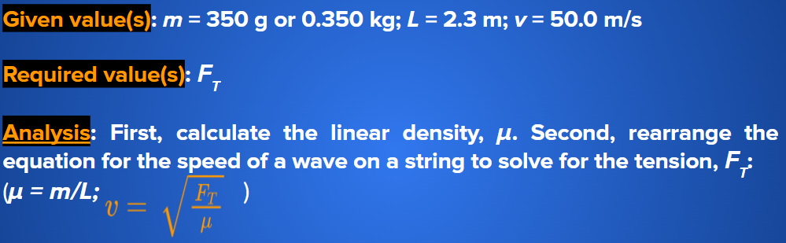

Determining Wave Speed
Universal Wave Equation
Universal wave equation is valid for all waves and wave types.
The universal wave equation can also be derived as follows:

Universal wave equation v = f λ
ExampleA harp string supports a wave with a wavelength of 2.3 m and a frequency of 220.0 Hz. Calculate its wave speed. Given value(s): wavelength (λ) = 2.3 m, frequency (f) = 220.0 Hz\ Required value(s): wave speed (v) Analysis: In this example, both λ and f are given. So, to solve this problem, substitute for the variables and calculate the answer using the universal wave equation: v = f λ Solution: v = f λ Statement: The wave speed on the harp string is 506 m/s. |
ExampleA trumpet produces a sound wave that is observed travelling at 350 m/s with a frequency of 1046.50 Hz. Calculate the wavelength of the sound wave. Given value(s): wave speed (v) = 350 m/s, frequency (f) = 1046.50 Hz Required value(s): wavelength (λ) Analysis: Rearrange the universal wave equation to solve for wavelength: v = f λ Solution: v = f λ Statement: The wavelength of the sound wave coming from the trumpet is 0.33 m. |
Practice
If a wave has a speed of 405 m/s and a wavelength of 2.0 m, what is its frequency?
Factors That Affect Wave Speed
The transfer of energy using waves is more efficient if the particle vibrations do not absorb much energy. For example, a more rigid object such as a soccer ball tends to bounce more effectively if it is fully inflated.
If the atoms comprising an object are linked by strong intermolecular forces, the wave energy is transmitted more efficiently and thus the wave speed is faster. If these forces are not as strong, then energy transmission is less efficient and thus slower.
TEMPERATURE
In the case of gases, you might think that cooler gases are more effective at transmitting sound because they are denser. However, usually the converse is true because, with an increase in temperature, the molecules move faster and transfer their kinetic energy more efficiently.
Comparing transmission of sound through (a) a cool gas and (b) a warm gas. The warm molecules jostle neighbouring molecules more rapidly, thus increasing the rate of sound energy transfer.
.jpeg)
1.png)
LINEAR DENSITY AND TENSION
The speed of a wave along a string, such as a violin or guitar string, is governed by the properties of the string. A string’s linear density, or mass per unit distance, determines how much force it will take to make the string vibrate. Linear density, µ, is calculated using the equation:
µ = m / L
Another variable affecting wave speed is tension. A loose string, for example, will quickly absorb all of the energy. A taut (tight) string, however, will transmit energy very effectively. Linear density and tension are the only variables that control the speed that waves can travel along a string. The equation for the speed of a wave along a string is:

ExampleOn your class wave machine, you have a string of mass 350 g and length 2.3 m. You would like to send a wave along this string at a speed of 50.0 m/s. What must the tension of the string be?  Solution: Statement: The required tension of the string on the wave machine is 380 N. |

PracticeIf a wave machine string has a linear density of 0.2 kg/m and a wave speed of 200 m/s, what tension is required? |